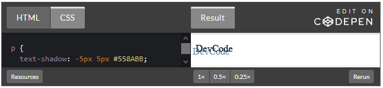

Ejemplos
Alineación de Texto (Text-align)
A pesar de su nombre, la propiedad text-align no sólo controla la alineación del texto. En realidad, esta propiedad establece la alineación de los contenidos (texto, imágenes) que se encuentran dentro de un elemento de bloque.
El valor inicial de la propiedad text-align depende a su vez del valor de la propiedad direction. Si el texto se escribe de izquierda a derecha (direction: ltr) el valor inicial de text-align es left. Por el contrario, el valor inicial de text-align es right cuando el texto se escribe de izquierda a derecha (direction: rtl).
La propiedad text-align define cuatro valores para alinear los contenidos a la izquierda (left), a la derecha (right), centrados (center) o justificados (justify).
Gracias al siguiente estilo podemos alinear el texto a la izquierda (left), a la derecha (right), al centro (center) o justificarlo (justify). Vamos a ver el código de tres párrafos: uno alineado al centro, otro a la izquierda y otra a la derecha.
La salida es:
Formas de colocar color en CSS
Esquemas de colores:
Los esquemas de colores (también llamadas paletas de colores) son combinaciones de varios colores. Los esquemas de colores pueden generarse manualmente o matemáticamente a partir de un color básico y de un círculo cromático.
Círculos cromáticos:
Los círculos cromáticos son círculos en los que cada sector circular tiene un color distinto. Existen distintos círculos cromáticos, en función de la distribución de los colores a lo largo del círculo.
Círculo cromático RGB o HSL:
El círculo cromático RGB es el círculo en el que los colores rojo, verde y azul se encuentran uniformemente distribuidos. Este círculo corresponde también a la representación HSL, en el que el valor del matiz (desde 0 hasta 360) coincide con el ángulo (rojo = 0°, verde = 120° y azul = 240°).
Códigos de Colores RGB:
Los códigos de colores RGB ya formaban parte de la recomendación CSS 1 (diciembre de 1996).
Las pantallas de ordenador consiguen los colores mezclando tres colores básicos (rojo, verde y azul). Cada color admite 256 niveles de intensidad, lo que hace un total de 256 x 256 x 256 = 16.777.216 colores distintos. Para hacer referencia a un color concreto, basta con indicar las intensidades de cada uno de los tres colores básicos.
Los códigos RGB se pueden expresar de distintas formas:
- rgb(rojo, verde, azul), donde rojo, verde y azul son números enteros desde 0 a 255.
- rgb(rojo, verde, azul), donde rojo, verde y azul son porcentajes desde 0% hasta 100%.
- #RRGGBB, donde RR, GG y BB son números hexadecimales desde 00 hasta FF.
- #RGB, donde R, G y B son números hexadecimales desde 0 hasta F (el navegador transforma esos números en números de dos cifras repitiendo el valor, es decir, F se convierte en FF, 6 en 66, etc.
Las más utilizadas son la tercera y la primera.
Borde, tipos de borde y bordes redondeados
Cualquier elemento de una página web puede tener un borde (en inglés, border). En esta lección se comentan las propiedades CSS que permiten definir el borde de un elemento. Se comentan tanto las propiedades CSS 2.1 como algunas propiedades CSS 3. En la CSS 3: Bordes se comentan más propiedades CSS 3 relacionadas con bordes.
La propiedad compuesta "border"
La propiedad compuesta border permite establecer simultáneamente los cuatro bordes (arriba, derecha, abajo e izquierda) de un elemento, definiendo su:
- color (nombre de color o código RGB o el valor transparent)
- grosor (valor absoluto de distancia, o los valores thin (fino), medium (medio) o thick (grueso))
- estilo
Estilos de bordes:
Los estilos de bordes definidos en CSS 2 son none, hidden, dotted, dashed, solid, double, groove, ridge, inset y outset.
Sombreado
La sombra del texto te permite establecer una sombra del texto actual detrás de él, pero encima del fondo.
Es fácil de usar como un simple efecto de sombra elegante. Sin embargo, esto es quizás más útil cuando se pone texto en una imagen de fondo que puede tener demasiado contraste.
La sombra del texto se introdujo en CSS 2.0, pero no los implementa, por lo que se eliminó de CSS 2.1 y se coloco en CSS3.
La sintaxis de text-shadow es la siguiente:
Los dos primeros valores especifican la longitud del desplazamiento de la sombra. El primer valor especifica la distancia horizontal y el segundo especifica la distancia vertical de la sombra. El tercer valor especifica el radio de desenfoque y el último valor describe el color de la sombra:
- La coordenada X
- La coordenada Y
- El radio de desenfoque
- El color de la sombra
El tercer valor, el radio de desenfoque, es un valor opcional que se puede especificar, pero no es necesario. Es la cantidad de píxeles que se estira el texto lo que causa un efecto borroso. Si no utiliza el tercer valor, se trata como si hubiera especificado un radio de desenfoque de cero.
Veamos un ejemplo:
Al indicar la coordenada x como negativo, la sombra se enfocará hacia la izquierda en caso contrario de un valor positivo se enfocará a la derecha.

Formas de establecer fondos
En esta página se explican las propiedades que se pueden aplicar a los fondos de cualquier elemento de una página web. Algunas de estas propiedades ya formaban parte de la recomendación CSS 2.1 y otras se han introducido en la futura recomendación CSS 3: Fondos y bordes. Aunque actualmente (diciembre de 2019) esta recomendación se encuentra en elaboración, los navegadores aceptan ya estas propiedades, por lo que pueden utilizarse sin problemas.
Cualquier imagen puede utilizarse de imagen de fondo. Para adaptarse a los diferentes tamaños de pantallas y mantener las imágenes lo más pequeñas posibles, si el elemento es mayor que la imagen, las imágenes se suelen repetir. Si la imagen está bien construida, la repetición puede dar un resultado continuo.
La propiedad compuesta "background"
La propiedad compuesta background permite definir simultáneamente todas las propiedades relacionadas con el fondo de cualquier elemento: background-color, background-image, background-position, background-size, background-repeat, background-attachment, background-origin y background-clip (explicadas más adelante en esta página).
Para evitar ambigüedades, si se especifica la propiedad background-size, inmediatamente antes se debe especificar la propiedad background-position y antes de background-size hay que escribir una barra (/).
Imágenes de fondos múltiples:
La futura recomendación CSS 3: Fondos y bordes, actualmente (diciembre de 2019) en elaboración, permite definir varias imágenes de fondo en un mismo elemento, simplemente separando entre comas las referencias a cada imagen.
Color de fondo: background-color
La propiedad background-color establece el color de fondo de cualquier elemento.